Chapter 9 그래픽
9.1 그래픽의 관리
R은 매우 다양하며 강력한 그래픽 기능을 제공한다.
- demo(graphics) : R이 제공하는 다양한 2D 그래픽 기능의 데모이다.
demo(graphics)##
##
## demo(graphics)
## ---- ~~~~~~~~
##
## > # Copyright (C) 1997-2009 The R Core Team
## >
## > require(datasets)
##
## > require(grDevices); require(graphics)
##
## > ## Here is some code which illustrates some of the differences between
## > ## R and S graphics capabilities. Note that colors are generally specified
## > ## by a character string name (taken from the X11 rgb.txt file) and that line
## > ## textures are given similarly. The parameter "bg" sets the background
## > ## parameter for the plot and there is also an "fg" parameter which sets
## > ## the foreground color.
## >
## >
## > x <- stats::rnorm(50)
##
## > opar <- par(bg = "white")
##
## > plot(x, ann = FALSE, type = "n")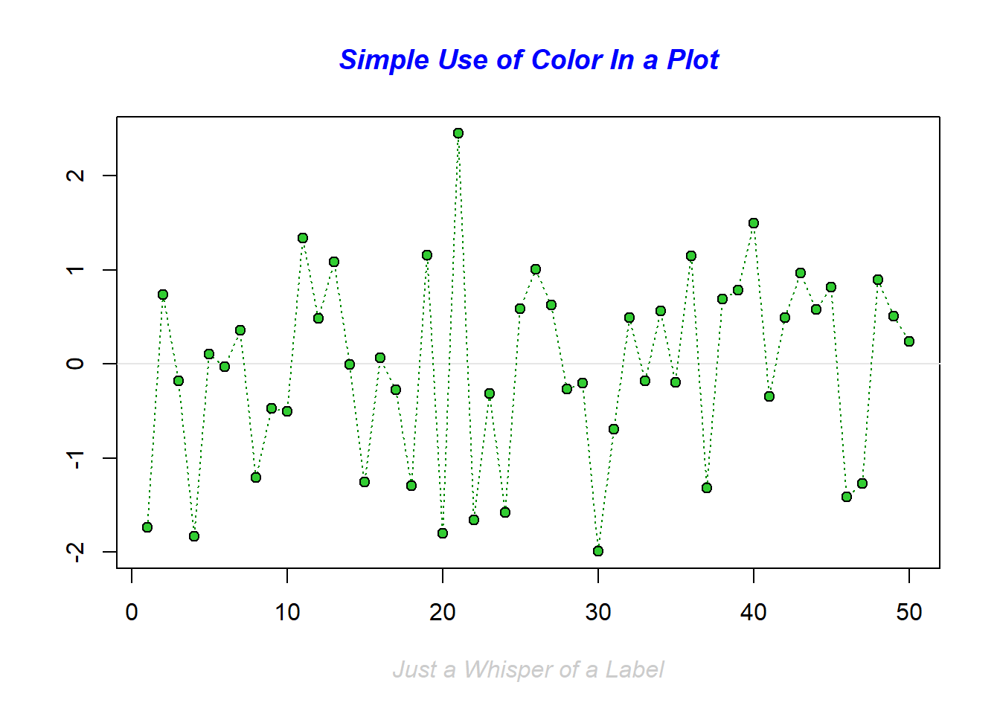
##
## > abline(h = 0, col = gray(.90))
##
## > lines(x, col = "green4", lty = "dotted")
##
## > points(x, bg = "limegreen", pch = 21)
##
## > title(main = "Simple Use of Color In a Plot",
## + xlab = "Just a Whisper of a Label",
## + col.main = "blue", col.lab = gray(.8),
## + cex.main = 1.2, cex.lab = 1.0, font.main = 4, font.lab = 3)
##
## > ## A little color wheel. This code just plots equally spaced hues in
## > ## a pie chart. If you have a cheap SVGA monitor (like me) you will
## > ## probably find that numerically equispaced does not mean visually
## > ## equispaced. On my display at home, these colors tend to cluster at
## > ## the RGB primaries. On the other hand on the SGI Indy at work the
## > ## effect is near perfect.
## >
## > par(bg = "gray")
##
## > pie(rep(1,24), col = rainbow(24), radius = 0.9)
##
## > title(main = "A Sample Color Wheel", cex.main = 1.4, font.main = 3)
##
## > title(xlab = "(Use this as a test of monitor linearity)",
## + cex.lab = 0.8, font.lab = 3)
##
## > ## We have already confessed to having these. This is just showing off X11
## > ## color names (and the example (from the postscript manual) is pretty "cute".
## >
## > pie.sales <- c(0.12, 0.3, 0.26, 0.16, 0.04, 0.12)
##
## > names(pie.sales) <- c("Blueberry", "Cherry",
## + "Apple", "Boston Cream", "Other", "Vanilla Cream")
##
## > pie(pie.sales,
## + col = c("purple","violetred1","green3","cornsilk","cyan","white"))
##
## > title(main = "January Pie Sales", cex.main = 1.8, font.main = 1)
##
## > title(xlab = "(Don't try this at home kids)", cex.lab = 0.8, font.lab = 3)
##
## > ## Boxplots: I couldn't resist the capability for filling the "box".
## > ## The use of color seems like a useful addition, it focuses attention
## > ## on the central bulk of the data.
## >
## > par(bg="cornsilk")
##
## > n <- 10
##
## > g <- gl(n, 100, n*100)
##
## > x <- rnorm(n*100) + sqrt(as.numeric(g))
##
## > boxplot(split(x,g), col="lavender", notch=TRUE)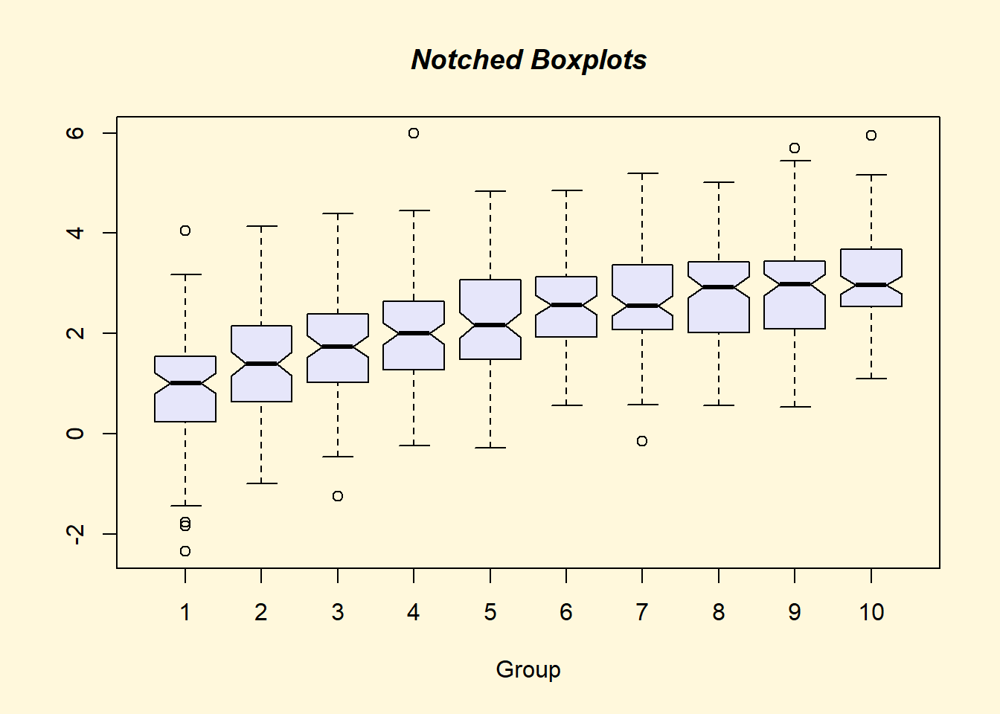
##
## > title(main="Notched Boxplots", xlab="Group", font.main=4, font.lab=1)
##
## > ## An example showing how to fill between curves.
## >
## > par(bg="white")
##
## > n <- 100
##
## > x <- c(0,cumsum(rnorm(n)))
##
## > y <- c(0,cumsum(rnorm(n)))
##
## > xx <- c(0:n, n:0)
##
## > yy <- c(x, rev(y))
##
## > plot(xx, yy, type="n", xlab="Time", ylab="Distance")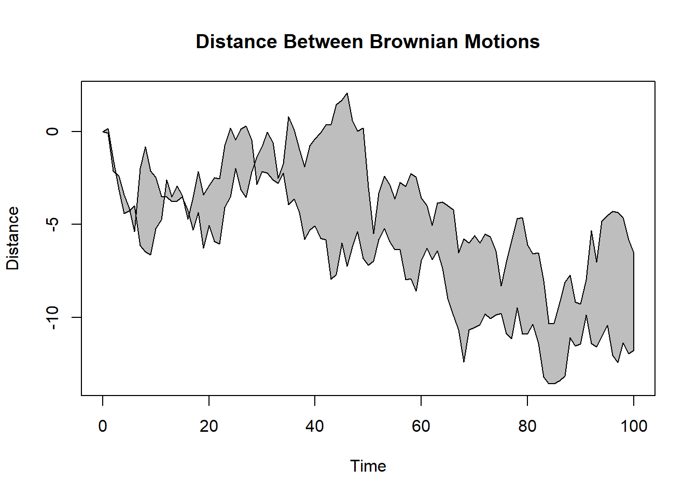
##
## > polygon(xx, yy, col="gray")
##
## > title("Distance Between Brownian Motions")
##
## > ## Colored plot margins, axis labels and titles. You do need to be
## > ## careful with these kinds of effects. It's easy to go completely
## > ## over the top and you can end up with your lunch all over the keyboard.
## > ## On the other hand, my market research clients love it.
## >
## > x <- c(0.00, 0.40, 0.86, 0.85, 0.69, 0.48, 0.54, 1.09, 1.11, 1.73, 2.05, 2.02)
##
## > par(bg="lightgray")
##
## > plot(x, type="n", axes=FALSE, ann=FALSE)
##
## > usr <- par("usr")
##
## > rect(usr[1], usr[3], usr[2], usr[4], col="cornsilk", border="black")
##
## > lines(x, col="blue")
##
## > points(x, pch=21, bg="lightcyan", cex=1.25)
##
## > axis(2, col.axis="blue", las=1)
##
## > axis(1, at=1:12, lab=month.abb, col.axis="blue")
##
## > box()
##
## > title(main= "The Level of Interest in R", font.main=4, col.main="red")
##
## > title(xlab= "1996", col.lab="red")
##
## > ## A filled histogram, showing how to change the font used for the
## > ## main title without changing the other annotation.
## >
## > par(bg="cornsilk")
##
## > x <- rnorm(1000)
##
## > hist(x, xlim=range(-4, 4, x), col="lavender", main="")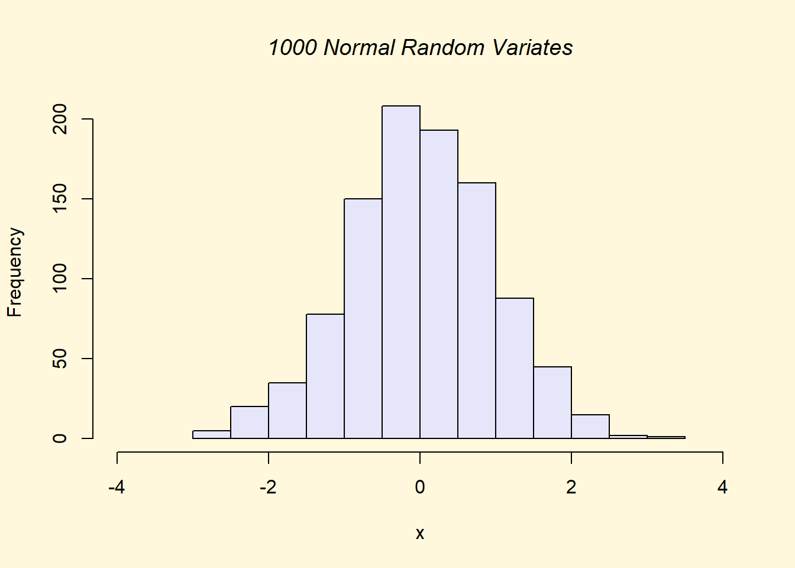
##
## > title(main="1000 Normal Random Variates", font.main=3)
##
## > ## A scatterplot matrix
## > ## The good old Iris data (yet again)
## >
## > pairs(iris[1:4], main="Edgar Anderson's Iris Data", font.main=4, pch=19)
##
## > pairs(iris[1:4], main="Edgar Anderson's Iris Data", pch=21,
## + bg = c("red", "green3", "blue")[unclass(iris$Species)])
##
## > ## Contour plotting
## > ## This produces a topographic map of one of Auckland's many volcanic "peaks".
## >
## > x <- 10*1:nrow(volcano)
##
## > y <- 10*1:ncol(volcano)
##
## > lev <- pretty(range(volcano), 10)
##
## > par(bg = "lightcyan")
##
## > pin <- par("pin")
##
## > xdelta <- diff(range(x))
##
## > ydelta <- diff(range(y))
##
## > xscale <- pin[1]/xdelta
##
## > yscale <- pin[2]/ydelta
##
## > scale <- min(xscale, yscale)
##
## > xadd <- 0.5*(pin[1]/scale - xdelta)
##
## > yadd <- 0.5*(pin[2]/scale - ydelta)
##
## > plot(numeric(0), numeric(0),
## + xlim = range(x)+c(-1,1)*xadd, ylim = range(y)+c(-1,1)*yadd,
## + type = "n", ann = FALSE)
##
## > usr <- par("usr")
##
## > rect(usr[1], usr[3], usr[2], usr[4], col="green3")
##
## > contour(x, y, volcano, levels = lev, col="yellow", lty="solid", add=TRUE)
##
## > box()
##
## > title("A Topographic Map of Maunga Whau", font= 4)
##
## > title(xlab = "Meters North", ylab = "Meters West", font= 3)
##
## > mtext("10 Meter Contour Spacing", side=3, line=0.35, outer=FALSE,
## + at = mean(par("usr")[1:2]), cex=0.7, font=3)
##
## > ## Conditioning plots
## >
## > par(bg="cornsilk")
##
## > coplot(lat ~ long | depth, data = quakes, pch = 21, bg = "green3")
##
## > par(opar)- demo(persp) : R이 제공하는 다양한 3D 그래픽 기능의 데모이다.
demo(persp)##
##
## demo(persp)
## ---- ~~~~~
##
## > ### Demos for persp() plots -- things not in example(persp)
## > ### -------------------------
## >
## > require(datasets)
##
## > require(grDevices); require(graphics)
##
## > ## (1) The Obligatory Mathematical surface.
## > ## Rotated sinc function.
## >
## > x <- seq(-10, 10, length.out = 50)
##
## > y <- x
##
## > rotsinc <- function(x,y)
## + {
## + sinc <- function(x) { y <- sin(x)/x ; y[is.na(y)] <- 1; y }
## + 10 * sinc( sqrt(x^2+y^2) )
## + }
##
## > sinc.exp <- expression(z == Sinc(sqrt(x^2 + y^2)))
##
## > z <- outer(x, y, rotsinc)
##
## > oldpar <- par(bg = "white")
##
## > persp(x, y, z, theta = 30, phi = 30, expand = 0.5, col = "lightblue")
##
## > title(sub=".")## work around persp+plotmath bug
##
## > title(main = sinc.exp)
##
## > persp(x, y, z, theta = 30, phi = 30, expand = 0.5, col = "lightblue",
## + ltheta = 120, shade = 0.75, ticktype = "detailed",
## + xlab = "X", ylab = "Y", zlab = "Z")
##
## > title(sub=".")## work around persp+plotmath bug
##
## > title(main = sinc.exp)
##
## > ## (2) Visualizing a simple DEM model
## >
## > z <- 2 * volcano # Exaggerate the relief
##
## > x <- 10 * (1:nrow(z)) # 10 meter spacing (S to N)
##
## > y <- 10 * (1:ncol(z)) # 10 meter spacing (E to W)
##
## > persp(x, y, z, theta = 120, phi = 15, scale = FALSE, axes = FALSE)
##
## > ## (3) Now something more complex
## > ## We border the surface, to make it more "slice like"
## > ## and color the top and sides of the surface differently.
## >
## > z0 <- min(z) - 20
##
## > z <- rbind(z0, cbind(z0, z, z0), z0)
##
## > x <- c(min(x) - 1e-10, x, max(x) + 1e-10)
##
## > y <- c(min(y) - 1e-10, y, max(y) + 1e-10)
##
## > fill <- matrix("green3", nrow = nrow(z)-1, ncol = ncol(z)-1)
##
## > fill[ , i2 <- c(1,ncol(fill))] <- "gray"
##
## > fill[i1 <- c(1,nrow(fill)) , ] <- "gray"
##
## > par(bg = "lightblue")
##
## > persp(x, y, z, theta = 120, phi = 15, col = fill, scale = FALSE, axes = FALSE)
##
## > title(main = "Maunga Whau\nOne of 50 Volcanoes in the Auckland Region.",
## + font.main = 4)
##
## > par(bg = "slategray")
##
## > persp(x, y, z, theta = 135, phi = 30, col = fill, scale = FALSE,
## + ltheta = -120, lphi = 15, shade = 0.65, axes = FALSE)
##
## > ## Don't draw the grid lines : border = NA
## > persp(x, y, z, theta = 135, phi = 30, col = "green3", scale = FALSE,
## + ltheta = -120, shade = 0.75, border = NA, box = FALSE)
##
## > ## `color gradient in the soil' :
## > fcol <- fill ; fcol[] <- terrain.colors(nrow(fcol))
##
## > persp(x, y, z, theta = 135, phi = 30, col = fcol, scale = FALSE,
## + ltheta = -120, shade = 0.3, border = NA, box = FALSE)
##
## > ## `image like' colors on top :
## > fcol <- fill
##
## > zi <- volcano[ -1,-1] + volcano[ -1,-61] +
## + volcano[-87,-1] + volcano[-87,-61] ## / 4
##
## > fcol[-i1,-i2] <-
## + terrain.colors(20)[cut(zi,
## + stats::quantile(zi, seq(0,1, length.out = 21)),
## + include.lowest = TRUE)]
##
## > persp(x, y, 2*z, theta = 110, phi = 40, col = fcol, scale = FALSE,
## + ltheta = -120, shade = 0.4, border = NA, box = FALSE)
##
## > ## reset par():
## > par(oldpar)그래픽 작성과 관련된 패키지는 grid, lattice, ggplot2 등이 있으며 기본 패키지 내에 grDevices, graphics 패키지 등이 있다.
9.1.1 여러 그래픽 장치 열기
그래픽 함수의 결과는 객체로 생성되는 것이 아니라 그래픽 장치(device)로 전해져 표현된다. 이러한 그래픽 장치로는 그래픽을 포함한 윈도우나 그래픽 파일이 있다.
bmp(filename = "Rplot%03d.bmp",
width = 480, height = 480, units = "px", pointsize = 12,
bg = "white", res = NA, family = "", restoreConsole = TRUE,
type = c("windows", "cairo"), antialias,
symbolfamily="default")
jpeg(filename = "Rplot%03d.jpg",
width = 480, height = 480, units = "px", pointsize = 12,
quality = 75,
bg = "white", res = NA, family = "", restoreConsole = TRUE,
type = c("windows", "cairo"), antialias,
symbolfamily="default")
png(filename = "Rplot%03d.png",
width = 480, height = 480, units = "px", pointsize = 12,
bg = "white", res = NA, family = "", restoreConsole = TRUE,
type = c("windows", "cairo", "cairo-png"), antialias,
symbolfamily="default")
tiff(filename = "Rplot%03d.tif",
width = 480, height = 480, units = "px", pointsize = 12,
compression = c("none", "rle", "lzw", "jpeg", "zip", "lzw+p", "zip+p"),
bg = "white", res = NA, family = "", restoreConsole = TRUE,
type = c("windows", "cairo"), antialias,
symbolfamily="default")savePlot(filename = "Rplot",
type = c("wmf", "emf", "png", "jpg", "jpeg", "bmp",
"tif", "tiff", "ps", "eps", "pdf"),
device = dev.cur(),
restoreConsole = TRUE)그래픽 함수가 수행된 후 열려진 그래픽 장치가 없을 경우, 그래픽 윈도우를 열고 그 위에 그래프를 표현하는데 이때 열려지는 그래픽 윈도우는 수행된 함수에 의존한다.
x11() or windows() : 그래픽 윈도우를 여는 함수이다.
postscript() or pdf() or png() : 그래픽 파일을 여는 함수이다.
그래픽 함수의 결과는 활성화되어 있는 가장 최근에 열린 그래픽 장치에 표현된다.
- dev.list() : 열려진 그래픽 장치의 리스트를 출력한다.
- dev.cur() : 현재 활성화된 그래픽 장치를 참조하는 함수이다.
- dev.set() : 인수로 주어지는 그래픽 장치 번호를 기본으로 해당 장치를 활성화 한다.
- dev.off() : 인수로 주어지는 번호를 기준으로 열려진 그래픽 장치를 닫는 함수로, 디폴트는 현태 활성화된 장치이다.
9.1.2 그래픽의 분할
- split.screen() : 현재 활성화된 그래픽 장치를 분할하는 함수이다. 그래픽 장치의 분할된 구역을 스크린(screen)이라 부른다.
- layout() : 현재 활성화된 그래픽 장치의 화면을 분할해 그래프의 출력 결과를 차례로 표현한다. 행렬을 통해 화면을 분할한다.
split.screen(c(2,1)) ## [1] 1 2 split.screen(c(1,3), screen = 2) ## [1] 3 4 5 screen(1)
plot(10:1)
screen(4)
plot(10:1)
close.screen(all = TRUE) nf <- layout(matrix(c(1,1,0,2), 2, 2, byrow=TRUE), respect=TRUE)
layout.show(nf)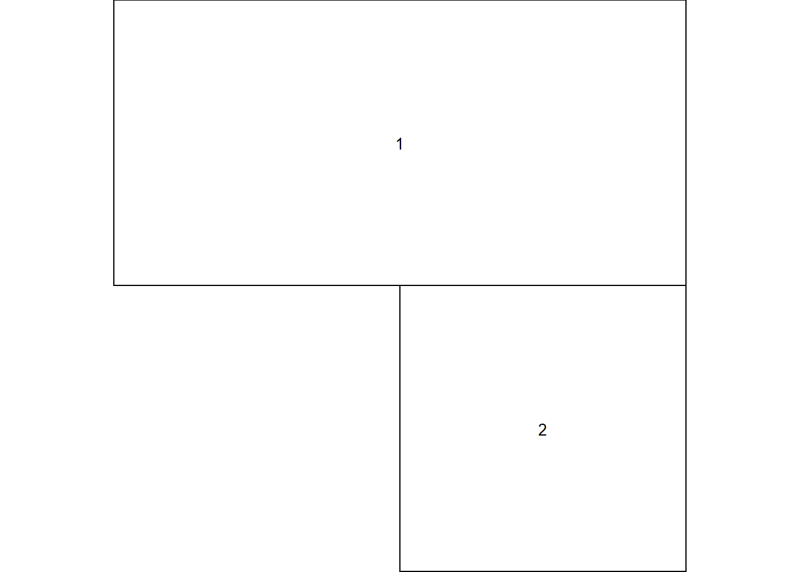
9.2 R의 고수준 그래픽 함수
R의 그래픽 함수는 새로운 그래프를 작성하는 함수와 기존에 존재하는 그래프에 점, 선, 면, 문자, 좌표축, 범례 등의 다양한 그래프의 속성을 정의하는 함수로 크게 구분된다. 이중 전자를 고수준(high-level) 그래픽 함수라고 하고 후자를 저수준(low-level) 그래픽 함수라 한다.
9.2.1 고수준 그래픽 함수의 종류 및 기능
- plot(x) : 가로축에는 인덱스(index)를 표시하고 세로축에 x의 값을 표시한다.
- plot(x,y) : x와 y의 이차원 그래프를 표현한다.
plot(cars)
plot(x <- sort(rnorm(47)), type = "s", main = "plot(x, type = \"s\")")
plot() 함수는 2차원 그래프를 그려주는 가장 기본적인 함수이다. plot() 함수에 대해 좀 더 자세히 살펴보자. plot() 함수의 기본 사용법은 다음과 같다.
plot(x, y, main=” “ , sub=” “ , xlim= , ylim= , xlab=” “ , ylab=” “ , type=” “ , axes=” “, col=” “, pch=” “)- x : 축의 자료, ▫ y : 축의 자료
- main : plot의 전체 제목
- sub : plot의 부 제목
- xlim, ylim : 축과 축의 범위
- xlab, ylab : 축 이름과 축의 이름
- type : plot내의 선의 형태를 결정
- axes : plot의 테두리 표시 여부
- col : 점 또는 선의 색
- pch : 점의 형태
x <- c(2,5,8,5,7,10,11,3,4,7,12,15)
y <- c(1,2,3,4,5,6,7,8,9,10,11,12)
plot(x, y, main="PLOT", sub="Test", xlab="number", ylab="value")
plot() 함수의 옵션중에서 type의 종류는 다음과 같다.
- “p” : 점
- “l” : 선
- “b”, “c” : 점과 선사이를 공백으로 처리, “c”는 점의 위치도 공백으로 처리
- “o” : 점을 선이 통과
- “h” : 수직선으로 된 “histogram”
- “s” : 계단형 그래프
- “S” : 다른 계단형 그래프
- “n” : 그래프 없음(아무점도 찍히지 않고 바탕만 나옴)
x <- c( 2,5,8,5,7,10,11,3,4,7,12,15)
y <- c(1,2,3,4,5,6,7,8,9,10,11,12)
plot(x,y,main="type-p", sub="Test", xlab="x-label", ylab="y-label",type="p")
plot(x,y,main="type-l", sub="Test", xlab="x-label", ylab="y-label",type="l")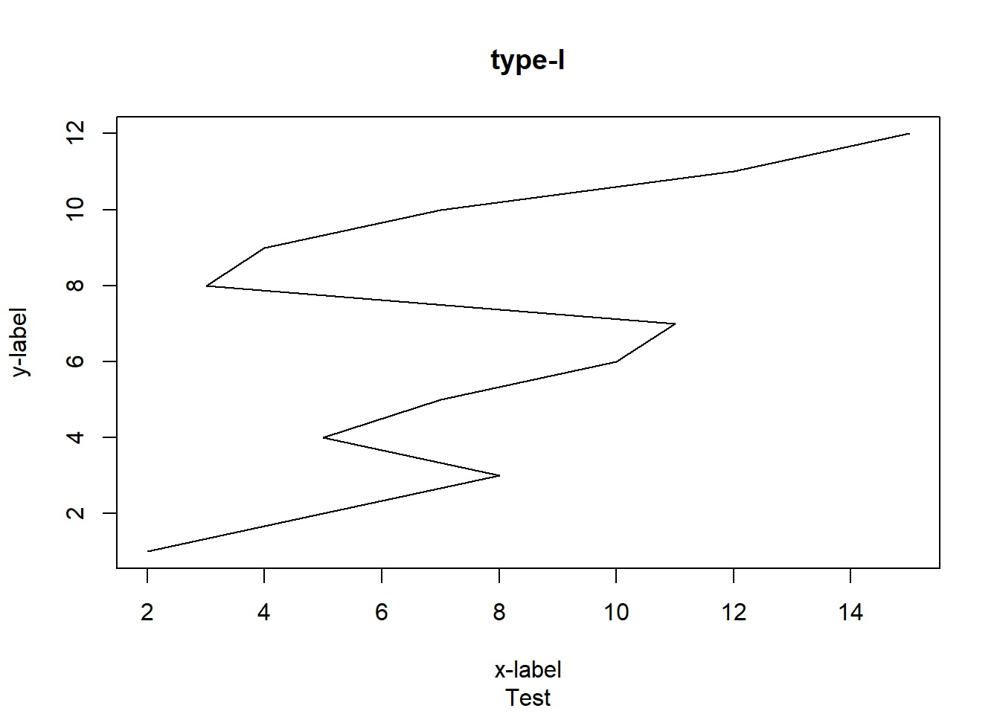
plot(x,y,main="type-b", sub="Test", xlab="x-label", ylab="y-label",type="b") plot(x,y,main="type-c", sub="Test", xlab="x-label", ylab="y-label",type="c") plot(x,y,main="type-o", sub="Test", xlab="x-label", ylab="y-label",type="o")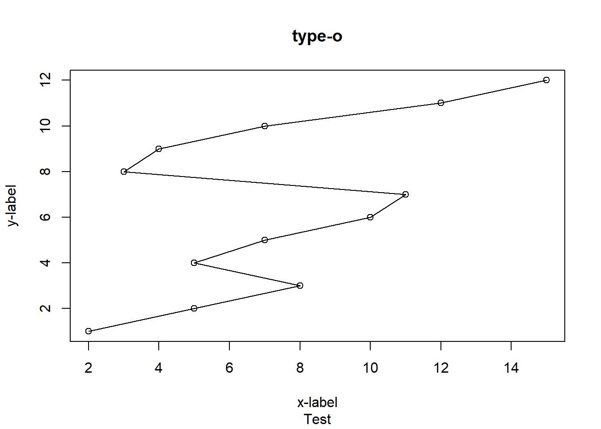
plot(x,y,main="type-h", sub="Test", xlab="x-label", ylab="y-label",type="h")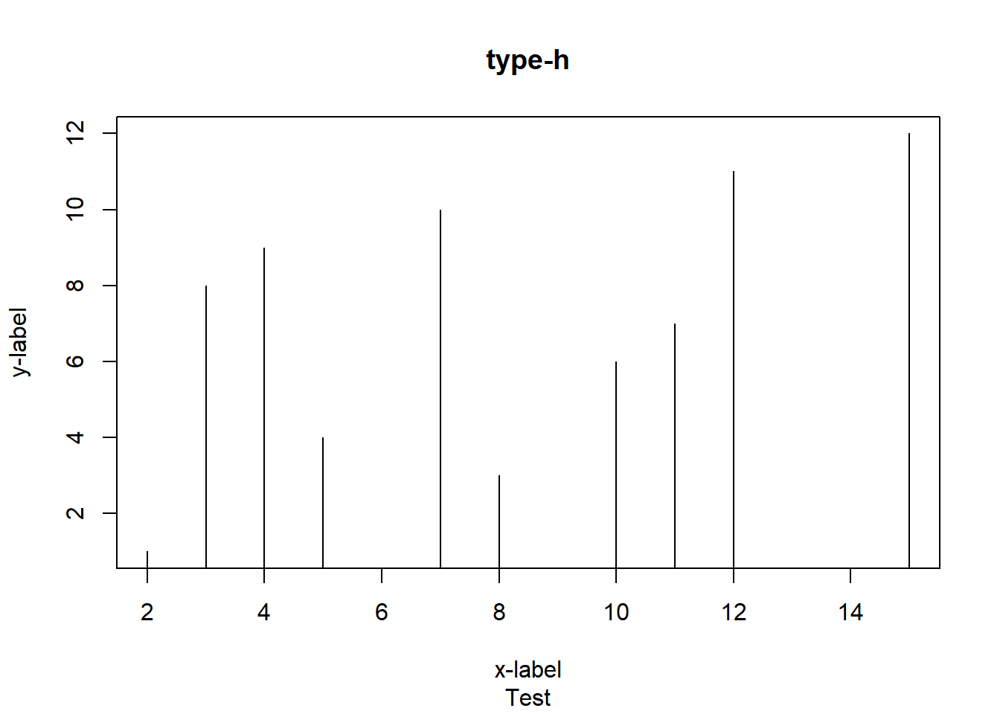
plot(x,y,main="type-s", sub="Test", xlab="x-label", ylab="y-label",type="s")
plot(x,y,main="type-S", sub="Test", xlab="x-label", ylab="y-label",type="S")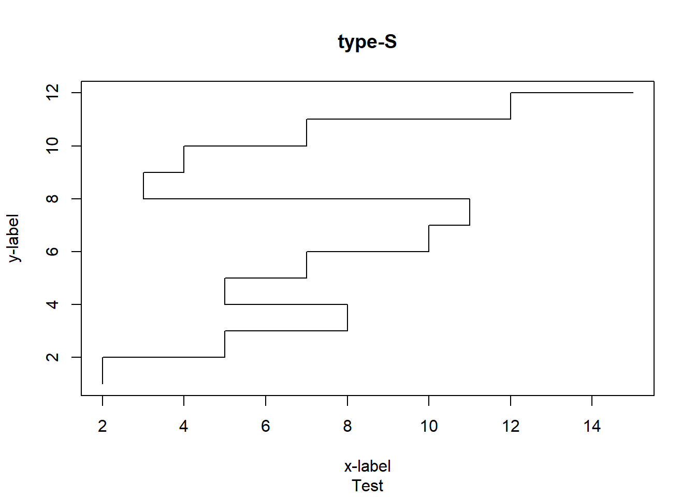
plot(x,y,main="type-n", sub="Test", xlab="x-label", ylab="y-label",type="n") 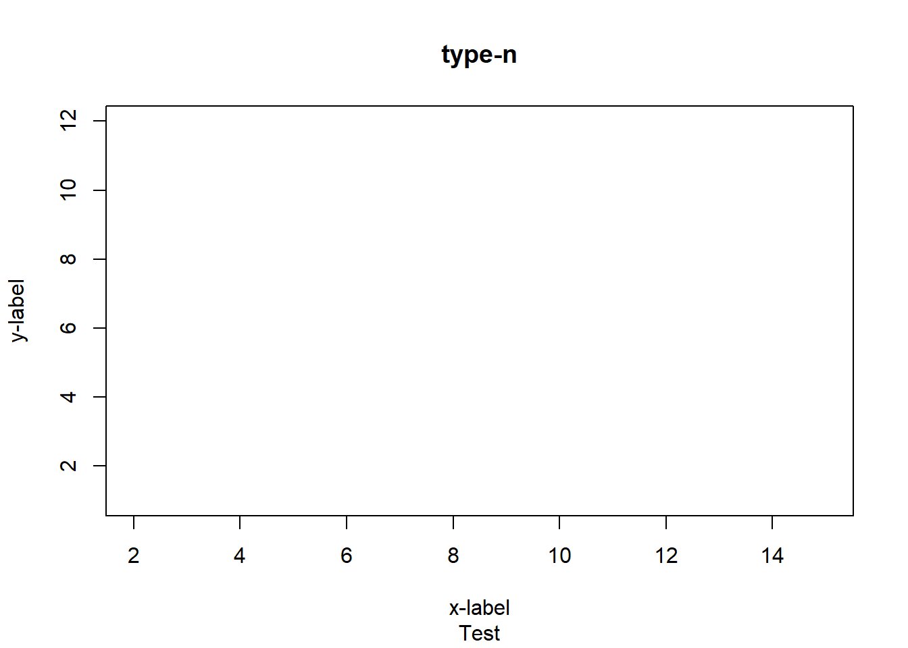
plot() 함수의 옵션중에서 pch의 종류는 help 창을 불러오면 확인 가능하다.
?pch다음은 R에서 제공하는 다양한 고수준 그래프이다. 여기서는 그림의 형태와 간단한 실행예제만 소개한다. 앞에서도 언급했듯이 R에서 제공하는 함수들은 함수가 적용되는 객체의 유형이 정해져 있는 경우가 많다. 그래프에서도 마찬가지로 객체의 유형에 따라 적용되는 함수가 정해져 있으므로 실행예제 프로그램을 통해 어떤 객체가 어떤 그래프에 사용될 수 있는지 파악하길 바란다.
- sunflowerplot(x,y) : x와 y의 이차원 그래프를 표현하며 중첩된 케이스가 있는 경우 자료의 크기를 꽃잎의 형태로 표현한다.
sunflowerplot(iris[, 3:4])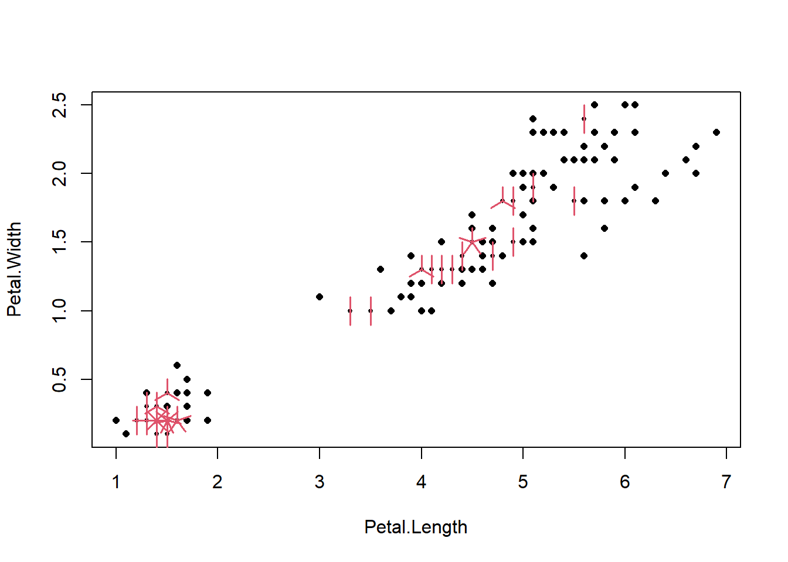
- pie(x) : x에 대한 파이 차트를 작성한다.
pie.sales <- c(0.12, 0.3, 0.26, 0.16, 0.04, 0.12)
names(pie.sales) <- c("Blueberry", "Cherry", "Apple", "Boston Cream", "Other", "Vanilla Cream")
pie(pie.sales, col = c("purple", "violetred1", "green3", "cornsilk", "cyan", "white"))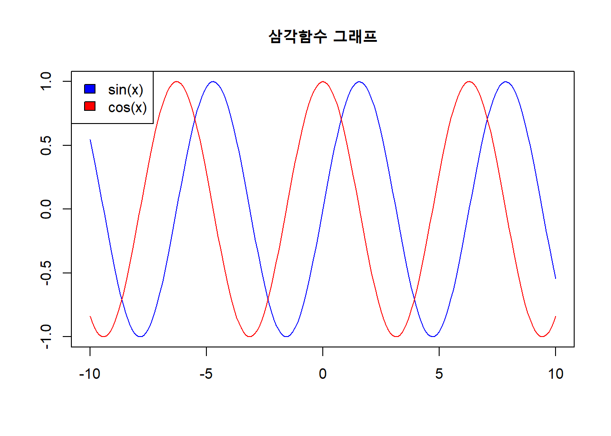
- boxplot(x) : 상자와 수염(box-and-whiskers) 그래프를 작성한다.
boxplot(count ~ spray, data = InsectSprays, col = "lightgray")
- stripchart(x) : x에 대한 일차원 산점도를 표현한다.
stripchart(rnorm(50))
- coplot(x~y |z) : z의 값에 따라 x와 y의 2차원 그래프를 표현한다.
coplot(lat ~ long | depth, data = quakes)
- interaction.plot(f1,f2,y) : f1과 f2가 요인이라면 y값의 평균을 y축 위에 표시하여 요인이 f1,f2인 2원 분산분석의 교호작용 그림을 표현한다.
with(ToothGrowth,interaction.plot(dose, supp, len, fixed=TRUE))
- matplot(x,y) : 행렬 데이터 x의 열별로 y의 지정된 형식에 따라 2차원 그래프를 표현한다.
matplot((-4:5)^2, main = "Quadratic")
- dotchart(x) : 데이터 프레임 x의 행(열) 수준별 산점도를 분석하고자 하는 변수들을 세로로 결합해 표현한다.
dotchart(VADeaths, main = "Death Rates in Virginia - 1940")
- fourfoldplot(x) : k개의 2x2 2차원 분할표에 대한 결합 형태인 차원(2,2,k)인 x에 대해 두 이항 변수들 간의 연관성을 시각적으로 표현한 1/4원 그래프를 k개 생성한다. 1/4원 그래프는 원을 4개의 균등한 영역으로 나누고 각 영역에 도수, 확률의 추정치와 그 신뢰구간을 표현하는 그래프이다.
x <- aperm(UCBAdmissions, c(2, 1, 3))
fourfoldplot(x)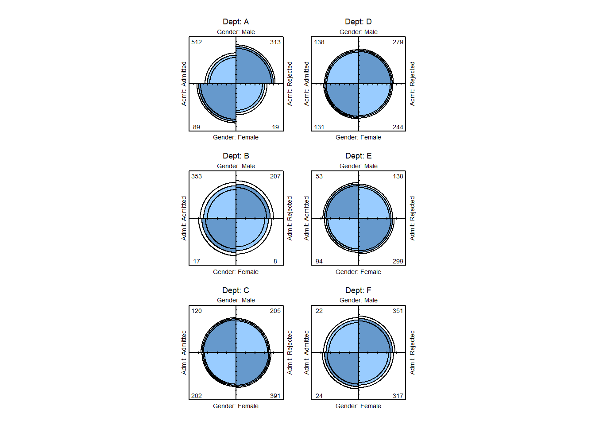
- assocplot(x) : 2차원 분할표에 대해 행과 열의 독립성을 나타내는 코헨-프렌들리(Cohen-Friendly) 그래프를 표현한다.
x <- margin.table(HairEyeColor, c(1, 2))
assocplot(x, main = "Relation between hair and eye color")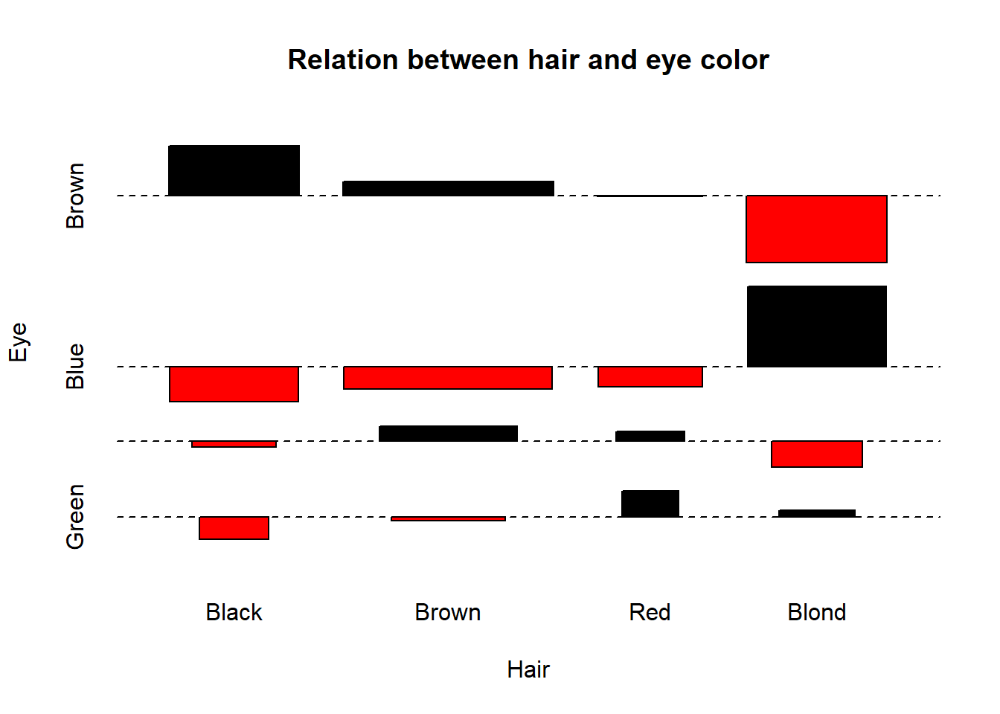
*mosaicplot(x) : 다차원 분할표에 대해 범주별 비율이나 주변 합계를 구분된 사각형의 면적으로 표현한다. 로그-선형 모형으로부터의 잔차의 크기나 부호는 색으로 구분하여 나타낸다.
mosaicplot(Titanic, main = "Survival on the Titanic", color = TRUE)
- pairs(x) : x가 행렬이나 데이터 프레임일 경우, x의 행에 대한 산점도 행렬을 출력한다.
pairs(~ Fertility + Education + Catholic, data = swiss, subset = Education < 20, main = "Swiss data, Education < 20")
- plot.ts(x) : 시계열 자료에 대한 시계열 그래프를 표현한다.
z <- ts(matrix(rt(200 * 8, df = 3), 200, 8), start = c(1961, 1), frequency = 12)
plot(z, yax.flip = TRUE)
- ts.plot(x) : 다중 시계열 자료에 대한 시계열 그래프를 표현한다.
ts.plot(ldeaths, mdeaths, fdeaths, gpars=list(xlab="year", ylab="deaths", lty=c(1:3)))
- hist(x) : x의 도수에 대한 히스토그램을 표현한다.
hist(islands)
- barplot(x) : x의 값에 대한 막대 그림을 표현한다.
barplot(VADeaths[,1])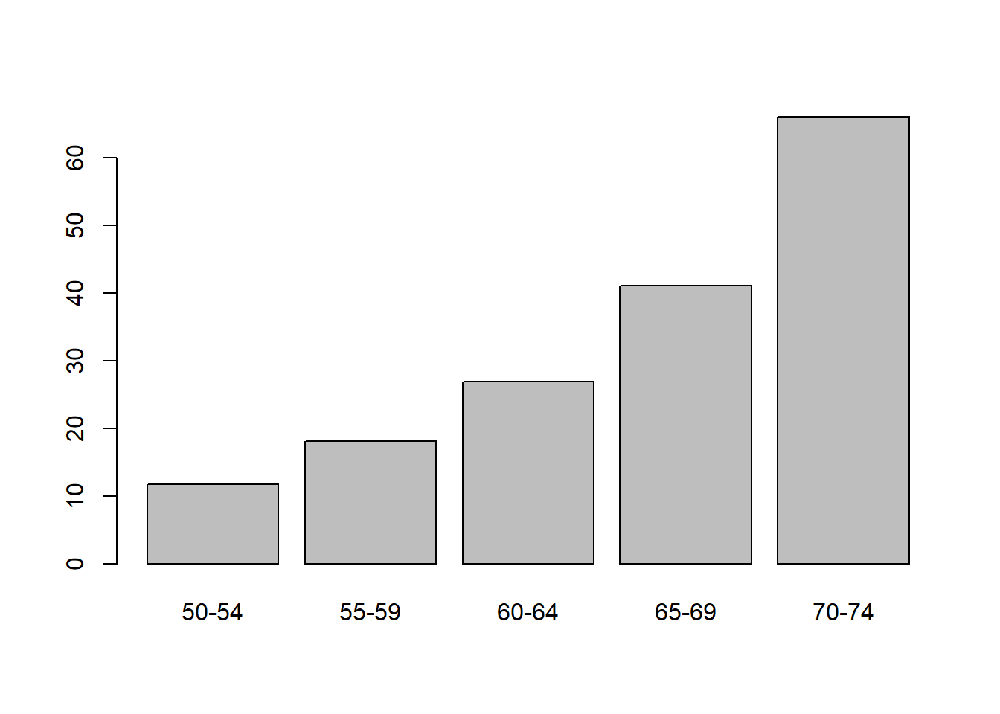
- qqnorm(x) : 누적정규확률 그래프를 출력한다.
- qqline(x) : normal quantile-quantile line을 추가한다.
y <- rt(200, df = 5)
qqnorm(y); qqline(y, col = 2)
- qqplot(x,y) : x의 분위수에 대한 y의 분위수를 그래프로 표현한다.
qqplot(y, rt(300, df = 5))
- contour(x,y,z) : 벡터인 x, y와 행렬인 z에 대해 2차원 등고선 그래프를 출력한다.
x <- -6:16
z <- outer(x, sqrt(abs(x)), FUN = "/")
image(x, x, z)
contour(x, x, z, col = "pink", add = TRUE, method = "edge", vfont = c("sans serif", "plain"))
- filled.contour(x,y,z) : contour(x,y,z)의 그래프에 등고선 사이를 색칠하고 그 색에 대한 구분을 범례로 출력한다.
x <- y <- seq(-4*pi, 4*pi, len = 27)
r <- sqrt(outer(x^2, y^2, "+"))
filled.contour(cos(r^2)*exp(-r/(2*pi)), axes = FALSE)
- image(x,y,z) : 3차원 자료나 공간 자료를 유색의 이미지로 표현한다.
x <- y <- seq(-4*pi, 4*pi, len=27)
r <- sqrt(outer(x^2, y^2, "+"))
image(z = z <- cos(r^2)*exp(-r/6), col=gray((0:32)/32))
- persp(x,y,z) : 3차원의 그래프를 2차원의 xy 평면에 투영하여 투시도를 표현한다.
x <- y <- seq(-10, 10, length= 30)
f <- function(x,y) { r <- sqrt(x^2+y^2); 10 * sin(r)/r }
z <- outer(x, y, f)
persp(x, y, z, theta = 30, phi = 30, expand = 0.5, col = "lightblue")
- stars(x) : x에 대한 별 그림을 표현한다.
stars(mtcars[, 1:7], key.loc = c(14, 2), main = "Motor Trend Cars : stars(*, full = F)", full = FALSE)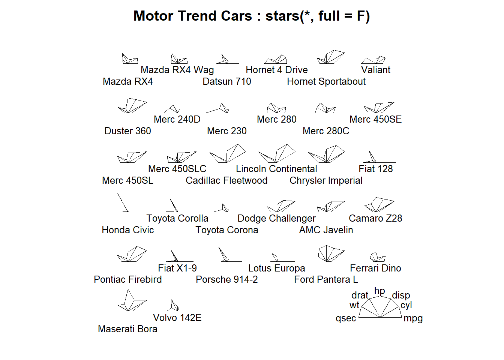
- lag.plot(x) : 시계열 자료 x에 대한 lag 그래프를 표현한다.
lag.plot(nhtemp, 8, diag.col = "forest green")
- plot.lm() : 회귀분석의 결과로부터 회귀진단을 위한 그래프를 출력한다.
plot(lm(sr ~ pop15 + pop75 + dpi + ddpi, data=LifeCycleSavings)) 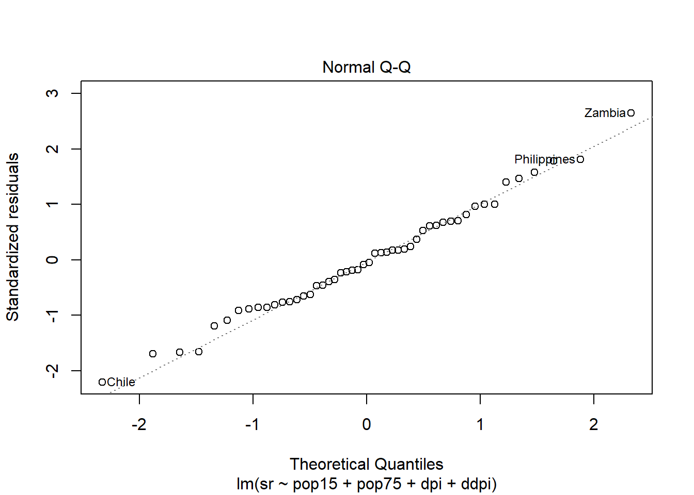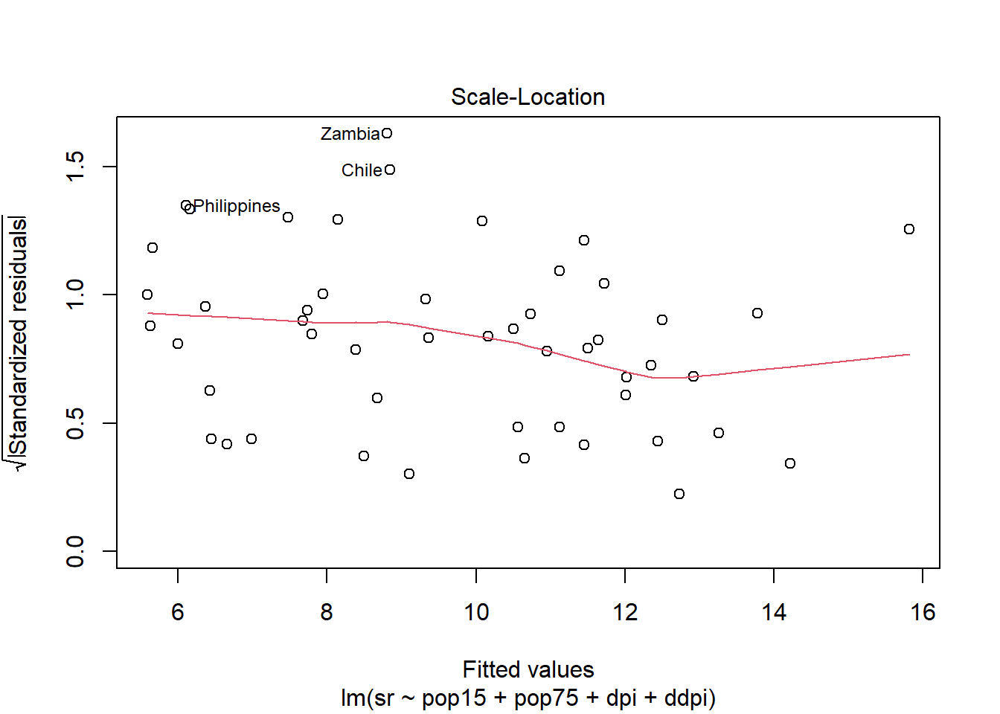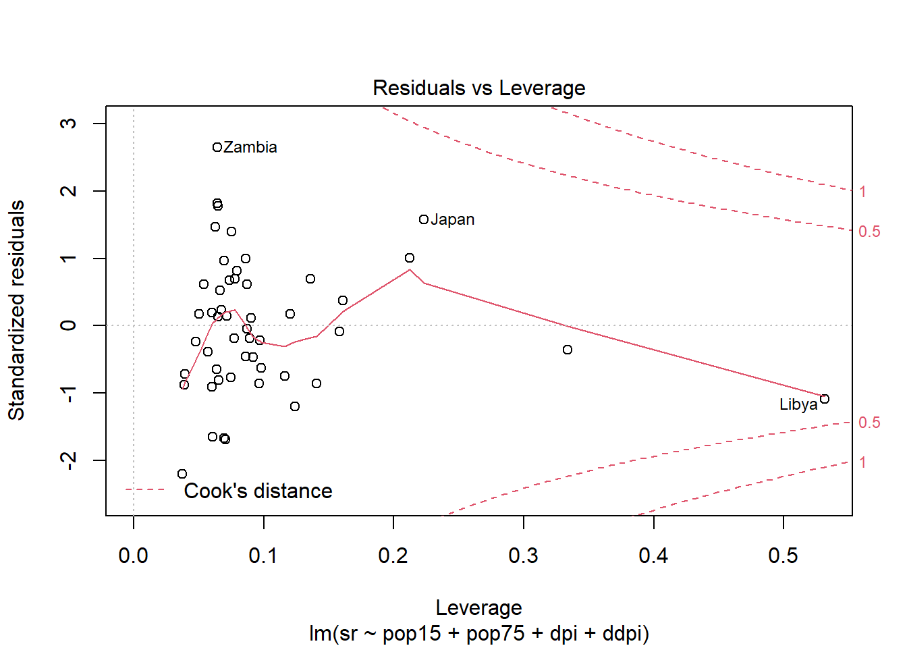
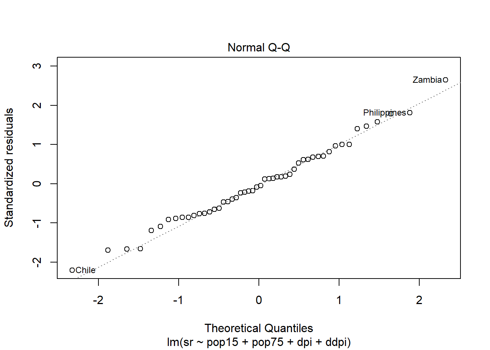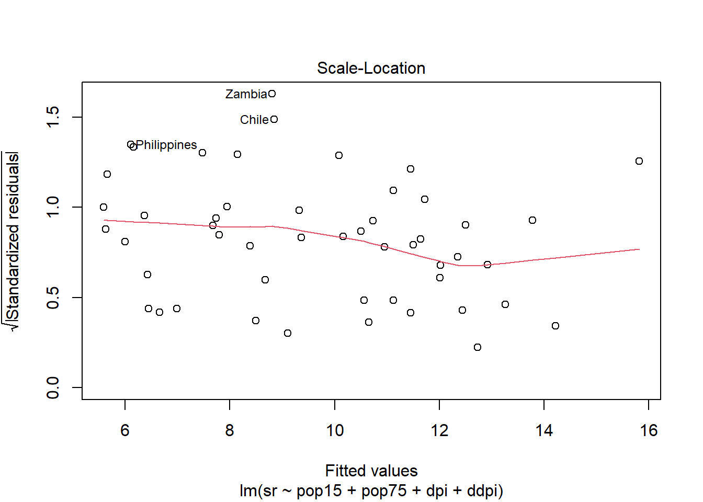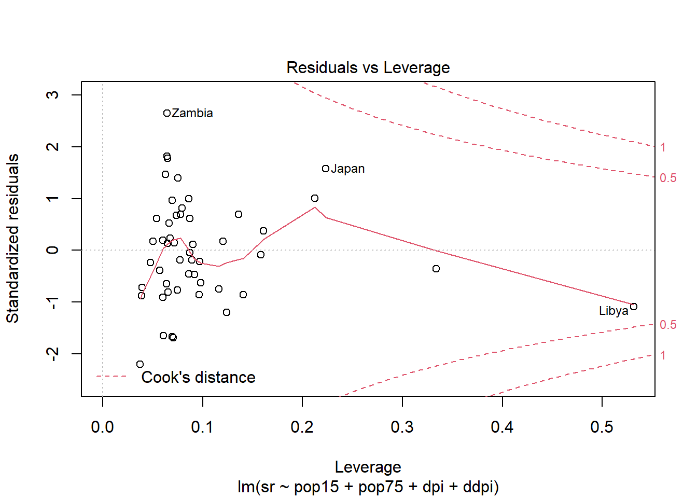
- termplot() : 회귀분석의 결과로 적합된 회귀모형을 이루는 각 항에 대해서 예측값들에 대응하는 회귀선을 출력한다.
termplot(lm.SR <- lm(sr ~ pop15 + pop75 + dpi + ddpi, data = LifeCycleSavings)) 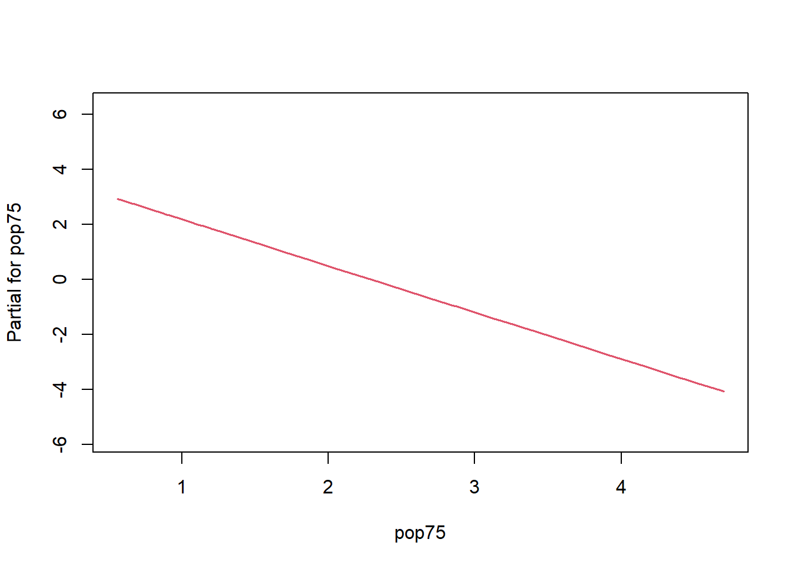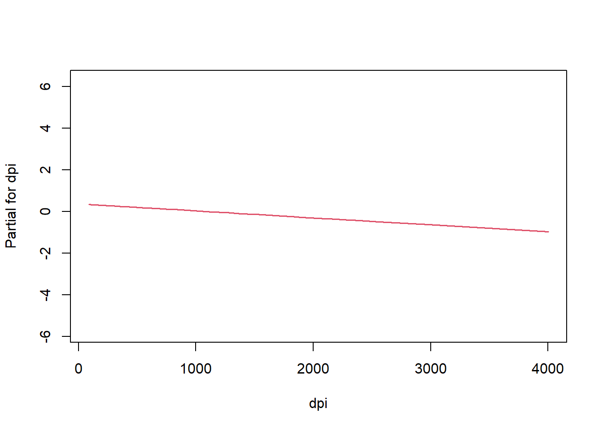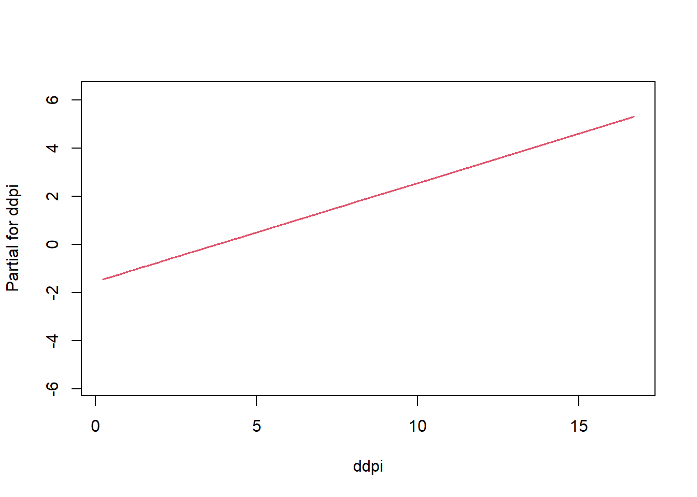
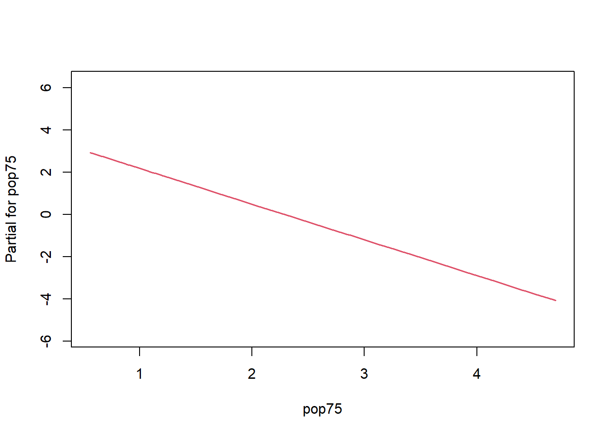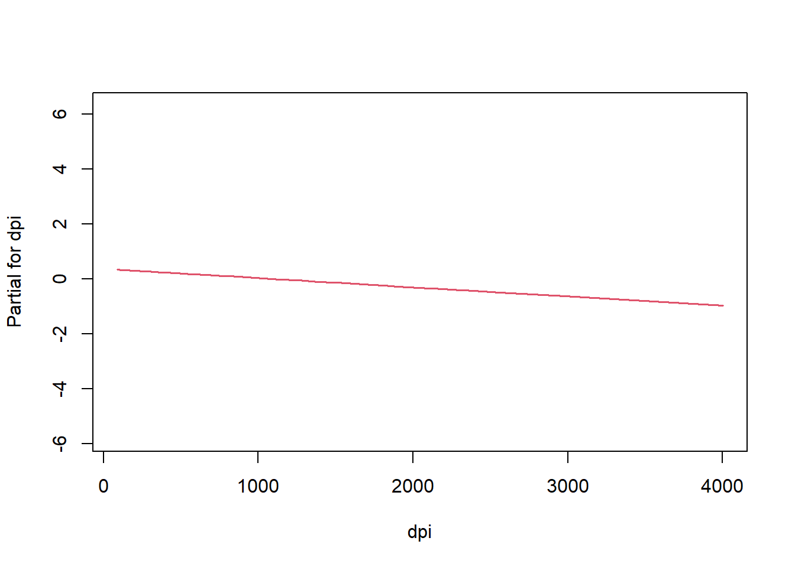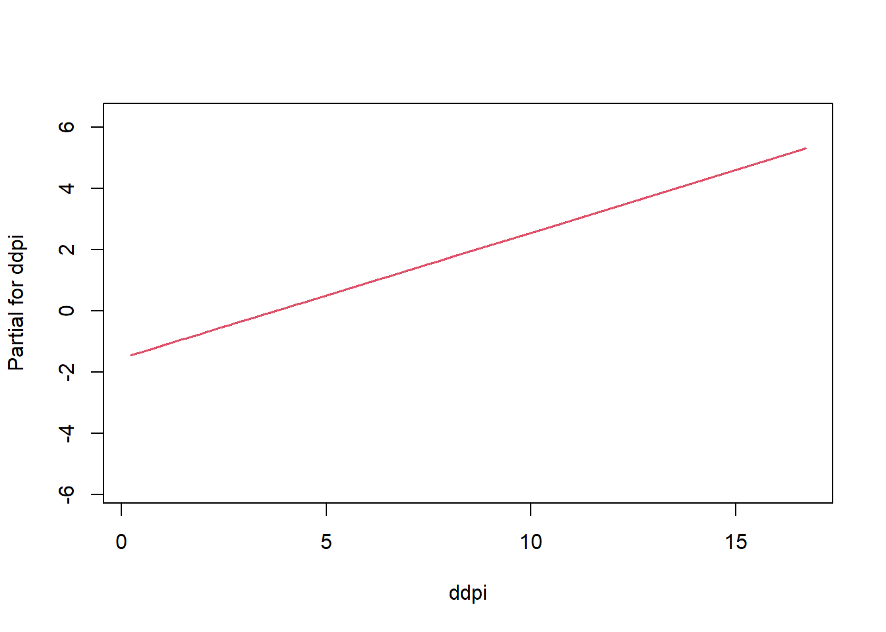
- screeplot() : 다변량 분석의 일종인 주성분 분석의 결과로부터 산비탈(scree plot) 그림을 출력 한다.
fit <- princomp(covmat= Harman74.cor)
screeplot(fit)
biplot(princomp(USArrests))
- symbols(x,y,…) : (x,y) 좌표에 기호(원, 사각형, 별, 온도계, 상자-수염)가 정의된 인수의 값에 따라 크기, 색 등이 다르게 표현된 심볼 그래프를 표현한다.
x <- 1:10
y <- sort(10*runif(10))
z <- runif(10)
z3 <- cbind(z, 2*runif(10), runif(10))
symbols(x, y, thermometers = z3, inches=FALSE)
text(x,y, apply(format(round(z3, digits=2)), 1, paste, collapse = ","), adj = c(-.2,0), cex = .75, col = "purple", xpd=NA)
9.2.2 공통 선택사항(option)
다양한 고수준 그래픽 함수는 고유의 기능을 수행하고 사용자가 원하는 최적의 출력결과를 얻기 위해 정의 가능한 다양한 선택사항들이 있다.
- add=FALSE : TRUE 이면 이전의 출력 그래프에 겹쳐서 출력한다.
- axes=TRUE : FALSE이면 그래프의 축이나 테두리를 출력하지 않는다.
- type=p : 그래프의 출력형식을 정의하는 것으로 p(점), l(줄), b(선위의 점), o(점위의 선), h(수직 선), s(계단 그림으로 수직선은 데이터의 위치 아래로 표현), S(계단 그림으로 수직선은 데이터의 위치 위로 표현)가 가능하다.
- xlim=, ylim= : 문자로 x(y) 축의 상한과 하한을 정의한다.
- xlab=, ylab= : 문자로 x(y) 축의 주석(annotates)을 정의한다.
- main= : 문자로 그래프의 주제목(main title)을 정의한다.
- sub= : 문자로 그래프의 부제목(sub title)을 정의한다.
x <- seq(-5,5, by=0.001)
y <- dnorm(x)
sam_mean <- rep(1,100)
for (i in 1:100) sam_mean[i] <- mean(rnorm(100))
layout(1:2,2,1)
plot(x,y,type="l", main="Standard Normal density")
hist(sam_mean,prob=T, main="Histogram of Sample mean")
tx <- seq(min(sam_mean), max(sam_mean), length=100)
ty <- dnorm(x=tx, mean=0,sd=1/10)
lines(tx,ty)
9.3 저수준 그래픽 함수
9.3.1 주요 저수준 그래픽 함수
저수준 그래픽 함수는 기존의 그래프의 속성을 변경하는 함수로 주요 저수준 그래픽 함수는 다음과 같다.
- point(x,y) : (x,y) 좌표에 포인트를 추가한다.
- lines(x,y) : (x,y) 좌료를 연결하는 라인을 추가한다.
- curve(f(x),from,to) : x의 함수 f(x)를 그려준다.
- text(x,y,labels) : 이름을 추가한다.
- mtext(text,side,line) : 그래프의 side와 line 인수로 정의된 위치에 text를 출력한다.
- segments(x0,y0,x1,y1) : (x0,y0) 좌표와 (x1,y1) 좌표 사이를 연결하는 선을 출력한다.
- arrows(x0,y0,x1,y1,angle,code) : (x0,y0) 좌표와 (x1,y1) 좌표 사이를 연결하는 화살표를 출력한다. 화살표의 위치는 code 인수로 정의되며 angle 인수는 화살표의 모양을 정의한다.
- abline(a,b) : 기울기 b, 절편 a인 직선을 출력한다.
- abline(h=y) : y축의 값을 y로 갖는 x축과 평행한 직선을 출력한다.
- abline(v=x) : x축의 값을 x로 갖는 y축과 평행한 직선을 출력한다.
- abline(lm.obj) : lm 함수의 객체로부터 주어지는 회귀선을 출력한다.
- rect(x1,y1,x2,y2) : 좌표 (x1,y1), (x1,y2), (x2,y2), (x2,y1)을 연결하는 사각형을 추가한다.
- polygon(x,y) : x와 y로부터 주어지는 좌표들을 연결하는 다각형을 추가한다.
- legend(x,y,legend) : 좌표 (x,y)에 위치하는 legend에 주어진 범례를 출력한다.
- title() : 주제목과 부제목을 추가한다.
- axis(side, vect) : 축을 side 인수에 정의된 위치에 추가하고 vect의 값에 따라 ablind(h=y), abline(v=x)의 결과와 같은 평행선을 굵게 표현한다.
- box() : 그래프를 감싸는 상자를 추가한다.
- rug(x) : x의 값을 x 축에 표현한다.
- locator(n, type) : 그래프 내에서 사용자가 n번 클릭한 위치의 좌표값을 표현하고 type 인수에 따른 점, 선 등을 추가한다. 디폴트는 type=“n”로 추가하지 않는 것이다.
9.3.2 저수준 그래픽 함수 적용 예
- points(x, y, pch= , cex= ) 함수
- cex는 점의 크기를 결정하는 옵션이다.
x <- c( 2,5,8,5,7,10,11,3,4,7,12,15)
y <- c(1,2,3,4,5,6,7,8,9,10,11,12)
plot(x,y,main="PLOT", sub="Test", xlab="x-label", ylab="y-label",type="n")
points(x, y, pch=19, cex=1)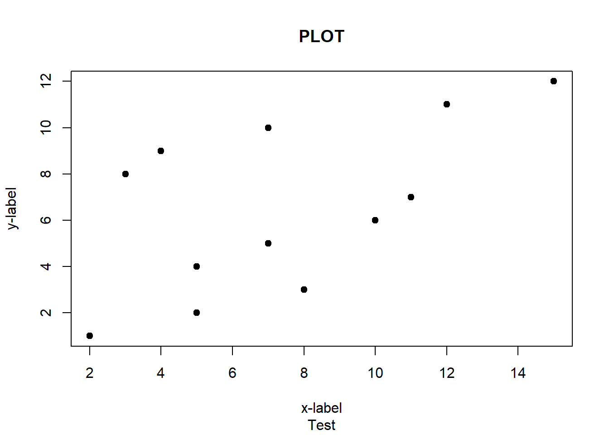
- lines(x, y, lty= , col= , pch= , lwd= ) 함수
- lty는 점선의 종류를 설정하며, lwd는 선의 굵기를 결정한다.
plot(0:4, 0:4, type="n", ylim=c(0,20), xlab="x-label", ylab="y-label")
lines(c(1,3), c(20,20), lty=1)
lines(c(1,3), c(19,19), lty=2)
lines(c(1,3), c(18,18), lty=3)
lines(c(1,3), c(17,17), lty=4)
lines(c(1,3), c(16,16), lty=5)
lines(c(1,3), c(15,15), lty=6)
lines(c(1,3), c(14,14), lty="blank")
lines(c(1,3), c(13,13), lty="solid")
lines(c(1,3), c(12,12), lty="dashed")
lines(c(1,3), c(11,11), lty="dotted")
lines(c(1,3), c(10,10), lty="dotdash")
lines(c(1,3), c(9,9), lty="longdash")
lines(c(1,3), c(8,8), lty="twodash")
lines(c(1,3), c(7,7), lty="33")
lines(c(1,3), c(6,6), lty="24")
lines(c(1,3), c(5,5), lty="F2")
lines(c(1,3), c(4,4), lty="2F")
lines(c(1,3), c(3,3), lty="3313")
lines(c(1,3), c(2,2), lty="F252")
lines(c(1,3), c(1,1), lty="FF29")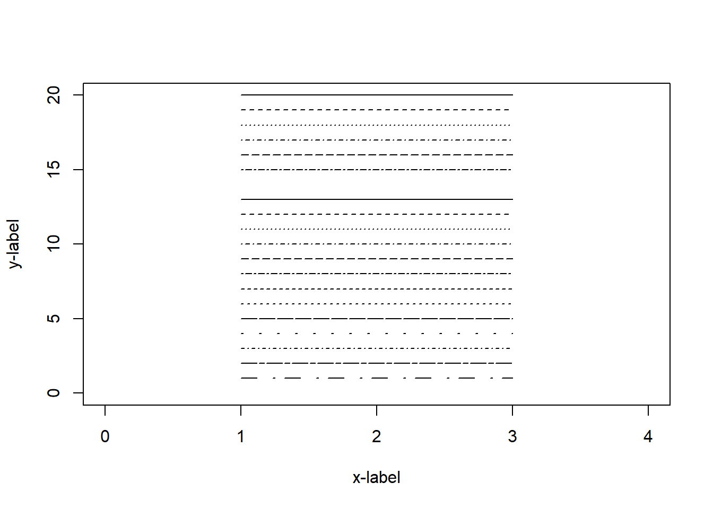
- text() 함수
x <- c( 2,5,8,5,7,10,11,3,4,7,12,15)
y <- c(1,2,3,4,5,6,7,8,9,10,11,12)
plot(x,y,main="PLOT", sub="Test", xlab="x-label", ylab="y-label",type="p")
text(3,5,"Plotting", col="red")
- abline() 함수
x <- c( 2,5,8,5,7,10,11,3,4,7,12,15)
y <- c(1,2,3,4,5,6,7,8,9,10,11,12)
plot(x,y,main="PLOT", sub="Test", xlab="x-label", ylab="y-label",type="p")
abline(h=3, v=4, lty=3)
- legend() 함수
x <- c( 2,5,8,5,7,10,11,3,4,7,12,15)
y <- c(1,2,3,4,5,6,7,8,9,10,11,12)
plot(x, y, type="n")
legend("bottomright", "(x,y)", pch=1, title="bottomright")
legend("bottom", "(x,y)", pch=1, title="bottom")
legend("bottomleft", "(x,y)", pch=1, title="bottomleft")
legend("left", "(x,y)", pch=1, title="left")
legend("topleft", "(x,y)", pch=1, title="topleft")
legend("top", "(x,y)", pch=1, title="top")
legend("topright", "(x,y)", pch=1, title="topright")
legend("right", "(x,y)", pch=1, title="right")
legend("center", "(x,y)", pch=1, title="center")
legend(8,4,"Legend(범례)")
- curve() 함수
x <- rnorm(100, mean=5, sd=1)
hist(x)
hist(x, freq=F)
curve(dnorm(x, mean=5, sd=1), add=T)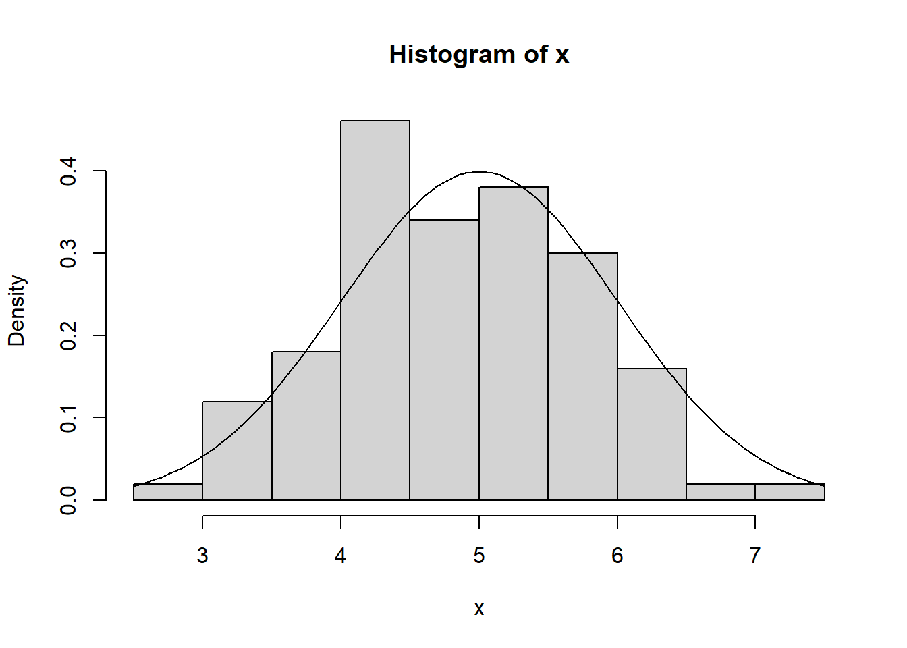
x <- c(1:20)
y <- 3 + 0.5*x +rnorm(20)
reg.y.x <- lm(y~x)
summary(reg.y.x)##
## Call:
## lm(formula = y ~ x)
##
## Residuals:
## Min 1Q Median 3Q Max
## -1.5040 -0.6159 -0.0568 0.5979 2.3818
##
## Coefficients:
## Estimate Std. Error t value Pr(>|t|)
## (Intercept) 3.00414 0.44311 6.78 2.38e-06 ***
## x 0.51757 0.03699 13.99 4.10e-11 ***
## ---
## Signif. codes: 0 '***' 0.001 '**' 0.01 '*' 0.05 '.' 0.1 ' ' 1
##
## Residual standard error: 0.9539 on 18 degrees of freedom
## Multiple R-squared: 0.9158, Adjusted R-squared: 0.9111
## F-statistic: 195.8 on 1 and 18 DF, p-value: 4.104e-11plot(x,y)
Rsquared <- 0.8863
abline(reg.y.x)
title("simple Linear Regression")
text(15,5,as.expression(substitute(italic(R)^2==r,list(r=Rsquared))))
9.4 par() 함수
그래프 표현의 향상은 저수준 그래픽 함수를 적용하는 것 이외에 그래프를 출력하는 그래픽 장치의 여러 가지 인수를 정의함으로써도 가능하다.
par() : 그래픽 장치의 다양한 속성들을 참조하고 정의하는 기능을 가진 함수이다. par() 함수는 그래픽 창을 닫기 전까지 설정이 유지된다. par() 함수의 인수는 70여개 정도이며 주요 인수들은 다음과 같다.
adj : 텍스트의 정렬방식을 정의하는 것으로 0은 좌측정렬, 1은 우측정렬, 0.5는 중앙정렬을 의미한다. 두 값이 주어지면 각각 수평정렬과 수직정렬의 형식을 정의하는 인수로서의 역할을 한다.
bg : 배경화면의 색을 정의한다.
bty : 그래프를 둘러싸는 상자의 모양을 정의한다.
cex : cex(character expansion) 인수는 문자나 점의 크기를 설정하는 역할을 하는 것으로 축, 레이블, 주제목과 부제목에 대해 동일한 역할을 하는 인수로 cex,axis, cex.lab, cex.main, cex.sub 인수가 있다.
col : 기호의 색을 정의한다. cex 인수와 같이 다른 대상에 대해 동일한 역할을 하는 col.axis, col.lab, col.main, col.sub 인수가 있다.
font : 텍스트의 글꼴 형식을 정의하는 것으로 1은 보통, 2는 이탤릭, 3은 굵은체, 4는 굵은 이탤릭체를 의미한다. cex 인수와 마찬가지로 font,axis, font.lab, font.main, font.sub 인수가 있다.
las : 축의 레이블의 표현형식을 정의하는 인수로 정수로 정의된다. 1은 축과 평행, 2는 수평, 3은 축에 수직, 4는 수직을 의미한다.
lty : 실선, 점선 등 선의 형식을 정의하는 인수이다.
lwd : 선의 굵기를 정의한다.
mar : 축과 그래프의 경계사이의 공간을 정의한다.
mfcol : 그래픽 윈도우를 분할하는 기준을 정의하는 인수로 c(nr,nc)로 정의되면 총 nr x nc 의 분할 화면이 생성된다. 생성되는 그래프는 열을 중심으로 순서대로 자리한다.
mfrow : mfcol과 동일한 역할을 하는 인수로 생성되는 그래프는 행을 중심으로 순서대로 자리한다.
pch : 기호의 형태를 정의하는 인수로 1~25 사이의 정수를 갖는다.
ps : 텍스트의 크기와 기호의 크기를 정의하는 정수값의 인수이다.
pty : 그래프 영역의 형태를 정의하는 인수로 “s”는 x축과 y축의 비율이 동일하게 설정하고 ”m”은 최대 크기로 정의한다.
tck : 축의 눈금길이를 정의하는 것으로 그래프 영역의 폭과 높이 중 작은 것을 1이라 하고 tck 비율에 따라 눈금의 길이가 정의된다.
tcl : 축의 눈금길이를 정의하는 인수로 tck 인수와 다른 점은 cex=1일 경우, 문자의 길이 1을 기준으로 정의한다.
xaxt : 축의 눈금 및 값들의 표현 여부를 정의하는 인수로 xaxt=n 이면 x축에는 눈금이나 값들이 표시되지 않는다.
yaxt : 축의 눈금 및 값들의 표현 여부를 정의하는 인수로 yaxt=n 이면 y축에는 눈금이나 값들이 표시되지 않는다.